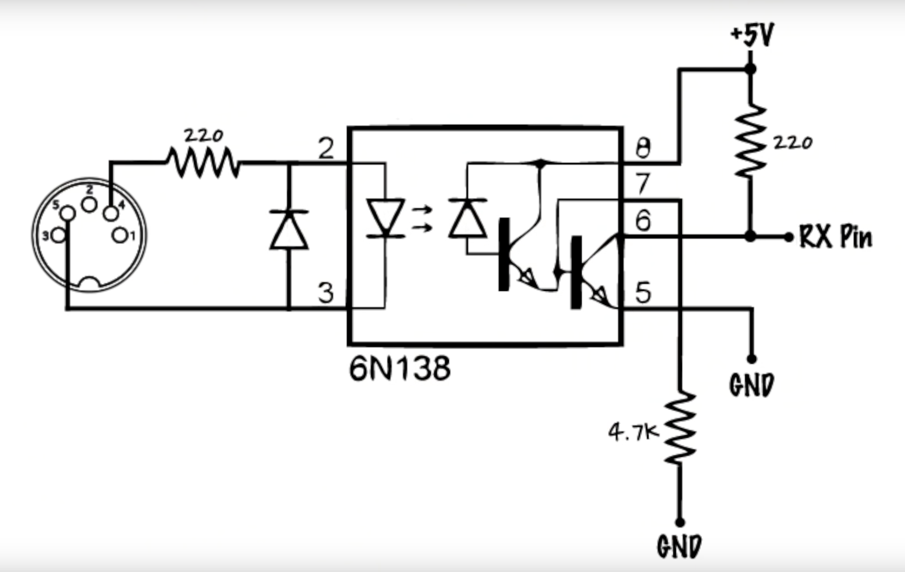

<br>
#### Week 6: Electronic Input Devices
Because it is difficult to be able to practice my piano during the day (due to my toddler son insisting that I either stop and play with him, or that he be the one playing the piano), I recently had the QuietTime ProRecord module added to my acoustic grand piano. Through a series of infra red leds tucked underneath the keybed, it is possible to read the velocity of the key strikes. From these data, MIDI (musical instrument digital interface) messages can be sent out.
I used the arduino uno to behave as an input, receiving the MIDI out messages that get sent out from the piano.
This is what the schematic looks like for the MIDI input circuit:

I needed to use an 6n138 optocoupler chip. Inside of this little chip there is an infrared LED that flashes on one side and is read on the other side. That is how it communicates the bits in the information flow. Pin 8 on the chip connects to the positive and pin 5 to ground.
The Midi jack has 5 pin connections; I connected to pins 4 and 5 to transmit the Midi note messages.
<img src="../images/insidepiano.jpg" alt="inside the piano" width="335" height="251">
<img src="../images/pianopedals.jpg"
alt="piano pedals" width="334" height="251">